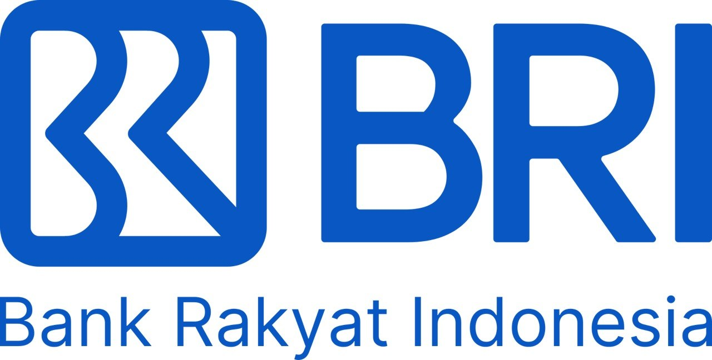

PT Bank Rakyat Indonesia
(Persero) Tbk
Leads frontend and backend developer squads developing payment systems that support over 200,000 EDC terminals and acquiring infrastructure.
Muhammad Renaldy Baskara
Payment systems · Backend engineer · Frontend engineer · Full-stack developer · Technical leadership
Backend, frontend, and full-stack engineer focused on secure payment systems, scalable APIs, and high-concurrency applications for banking and fintech.
I help banking and fintech companies build reliable backend systems that process thousands of transactions efficiently.
Currently IT Manager at Bank Rakyat Indonesia (BRI), leading frontend and backend developer squads developing payment systems for the merchant EDC ecosystem and acquiring infrastructure.
SYSTEM REPORT / 02 ENTRIES
A progression in banking technology from engineering management into broader technical leadership.

Leads frontend and backend developer squads developing payment systems that support over 200,000 EDC terminals and acquiring infrastructure.
A CLEARER VIEW OF THE WORK
A focused record of systems across payments, operations, finance, and application development.
The selected work below presents the product and platform scopes I have contributed to, from merchant payment flows and e-channel monitoring to private finance and operations tools.
Read the project archive ↓SELECTED SCOPES / 05 RECORDS
Selected product and platform scopes across payments, operations, and application development.
ENTERPRISE PAYMENT & EDC PLATFORM
A payment application supporting BRI’s 200,000+ EDC terminal ecosystem, built around high-volume and reliable transaction processing. Demonstrates my experience in backend engineering, payment systems, API integration, transaction processing, system reliability, and scalable architecture within a banking environment.
ENTERPRISE E-CHANNEL MONITORING PLATFORM
A centralized monitoring platform for tracking e-channel services, transaction performance, system health, and operational issues. Demonstrates my ability to build monitoring and observability solutions, operational dashboards, backend integrations, incident visibility, and reliable systems for large-scale financial services.
CRC CHECK / STABLE
Technologies and disciplines supporting reliable, maintainable payment platforms.
UPLINK / OPEN
LET’S BUILD RELIABLE SYSTEMSSeeking remote Senior Backend Engineer, Frontend Engineer, Full-Stack Developer, Software Engineer, Technical Lead, and IT/Engineering Manager opportunities. Open to part-time and full-time work.